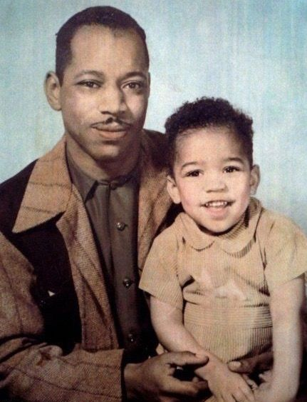
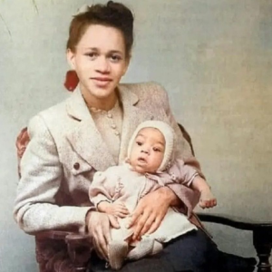

Jimi’s father, often referred to as Al, was a significant figure
in Jimi's life.
After serving in World War II, Al returned to Seattle and raised
Jimi and his siblings.
He was supportive of Jimi’s musical career and managed his
estate after his death.
Al Hendrix is remembered for his efforts to preserve and protect
his son's legacy.

A young Jimi sitting on his dad's lap
Lucille Jeter Hendrix (1925–1958):
Jimi’s mother, Lucille, had a troubled life and struggled with
health issues, including alcoholism. She separated from Al
Hendrix when Jimi was young
and passed away when Jimi was 15. Despite their strained
relationship, Jimi had a deep affection for his mother,
and her death had a profound impact on him.

Baby Jimi and his Mom.
Siblings
Leon Hendrix (b. 1948)
Jimi’s younger brother, Leon, had a close relationship with Jimi
during their childhood.
Like Jimi, Leon faced challenges growing up, including
difficulties with education and
legal issues. After Jimi's death, Leon became involved in music
and the family’s legal battles
over Jimi's estate. He has also written a book
about his brother, titled Jimi Hendrix: A Brother's Story.
Jimi and His brother Leon
Joseph Hendrix (1949–2017)
Joseph was Jimi’s half-brother from his father's side. Born with
physical and mental disabilities, Joseph was placed in
foster care as a child and did not have
much contact with Jimi or the rest of the family.
Kathy Hendrix (b. 1950)
Also known as Janie Hendrix, she was adopted by Al Hendrix after
he
married her mother, a woman named Ayako "June" Fujita.
Kathy was raised as Jimi's sister, although they were not
biologically related. After Al Hendrix's death, Kathy
(Janie) became the head of Experience Hendrix,
the company that manages Jimi Hendrix's estate and legacy.
Janie Hendrix
Pamela Hendrix (b. 1951):
Another half-sibling, Pamela was born to Jimi’s mother,
Lucille,
from another relationship. Pamela was also placed in foster care
as a child
and had minimal contact with Jimi.